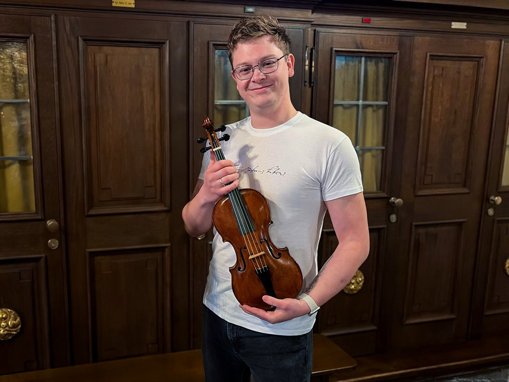

About me
Domenic Rutschmann
Baroque violinist and researcher. Grew up in Liechtenstein, lives in Germany.
My path to the baroque violin
In September 2017 I had my first violin lesson at the music school in Rankweil with Lukas Breuss. On 3 March 2018 he invited me to a concert by the Ensemble Adornamento, in which he played the viola. That was the moment it all began: the natural, mysterious sound of gut strings and the low pitch that instantly creates a different atmosphere.
In 2019 I was given my first baroque violin and my first baroque bow. After lessons in Rankweil and at the music school in Lindau, from 2020 onwards I largely taught myself baroque playing: through reading, videos, a great deal of experimenting and tips from fellow musicians I got to know through Instagram.
How I came to the Fickers
On 11 October 2023, in Ekkehard Köhler’s workshop in Argenbühl, I played a violin made by Johann Gottlob Ficker I in 1778. Until then I had considered instruments from the Vogtland to be second-rate. This violin called that fundamentally into question.
From November 2024 I worked with the violin maker Frauke Uebel-Derigs from Celle. Together we founded Arcanto Violins to make the craftsmanship of the Vogtland more visible. In April 2025 she restored a baroque violin from the Ficker family for me, with neither a label nor a brand stamp. What I first took to be a work by Johann Gottlob Ficker turned out to be the work of another family member. It was precisely this correction that drove me to study the whole dynasty more closely.
My aim is to make the Fickers’ craft heritage tangible and to create a reliable basis for identifying their instruments.
Who is writing here
I did not study music. Professionally I am a materials engineer in the aerospace industry: measuring precisely, comparing and documenting are part of my everyday work, and I approach the Ficker violins with the same care. I photograph violin accessories for Conrad Götz in Markneukirchen, and on Instagram, as @The_BaroqueBlog, I share what I learn about the Baroque era.
Contact
Information about Ficker instruments, questions or corrections are always welcome.